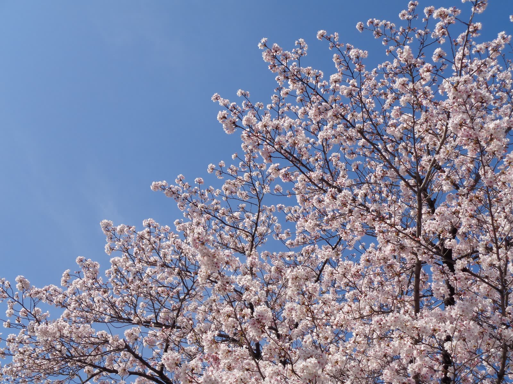

{{ s.no }}
{{ s.en }}
{{ s.title }}
{{ s.text }}

大学について
問いを持つこと。
言葉にして、だれかと分かち合うこと。
白藍女子大学は、女性がのびやかに考え、
自分の選んだ道を歩いていくための
学びの場として歩んできました。
ここには、あなたの声を待っている人がいます。

少人数のゼミで、教員と学生が近い距離で向き合う。
専門を深めながら、学部の垣根をこえて学ぶ。
社会に出たあとも、自分らしく働き、
生きていくための力を、四年間で育てていきます。

本学の特色
{{ s.no }}
{{ s.text }}

学部・学び
一年次は幅広い教養科目から関心を広げ、
学年が進むにつれて専門のゼミへ。
他学部の科目も履修できるカリキュラムで、
自分だけの学びの地図を描いていきます。
学部紹介
5学部から、あなたの「好き」を専門に。
{{ f.en }}
{{ f.depts }}
詳しく教室の外にも、学びは広がっています。
{{ l.text }}
✦
キャンパスライフ
{{ st.who }}
{{ st.text }}
部活動・サークル
施設
行事
春の新入生歓迎行事、秋の学園祭、ゼミ合同の研究発表会など、学年や学部をこえて交流できる行事が一年を通して開かれます。


入試・オープンキャンパス
入試制度・日程・出願方法の概要です。詳細は必ず最新の入学試験要項でご確認ください。
［仮］の表示は公式情報が未確定のサンプル内容です。日程・定員・費用は掲載していません。
{{ e.name }}
{{ e.text }}
オープンキャンパス
来場型イベント［仮］
模擬授業、在学生とのキャンパスツアー、個別の入試相談を予定しています。保護者の方もご参加いただけます。
開催日：20XX年X月X日（X）［仮］
来場予約をする →まずは、キャンパスに
会いに来てください。